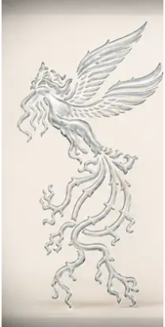
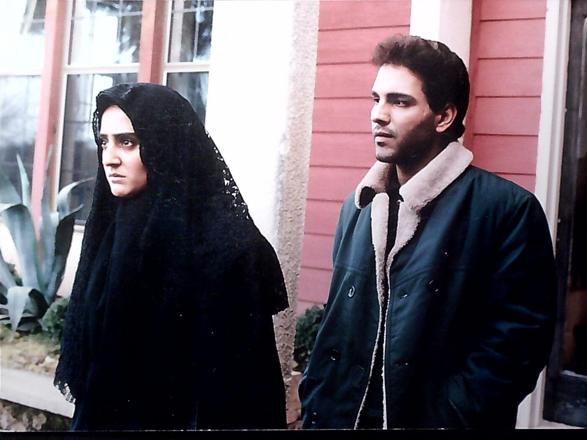
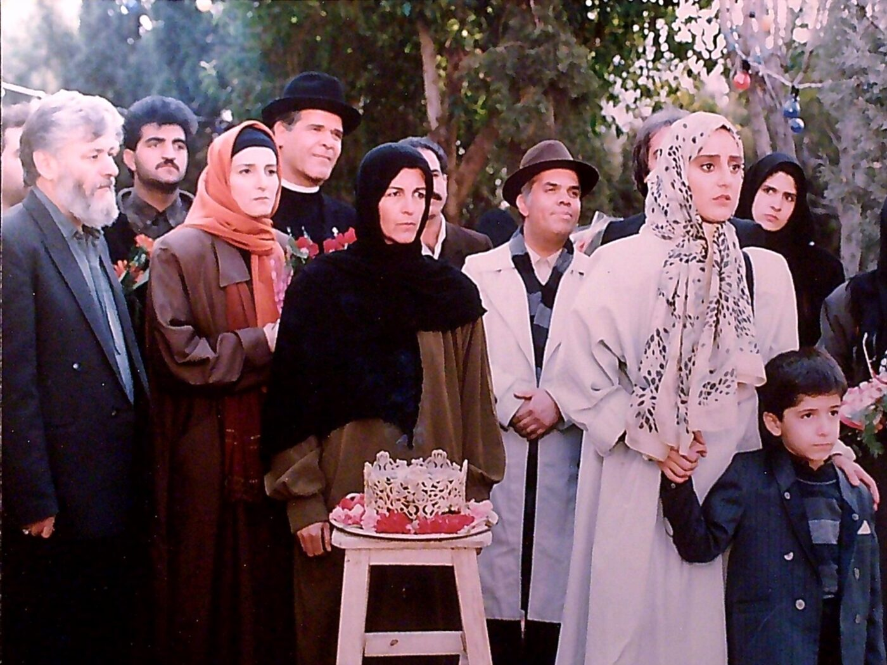
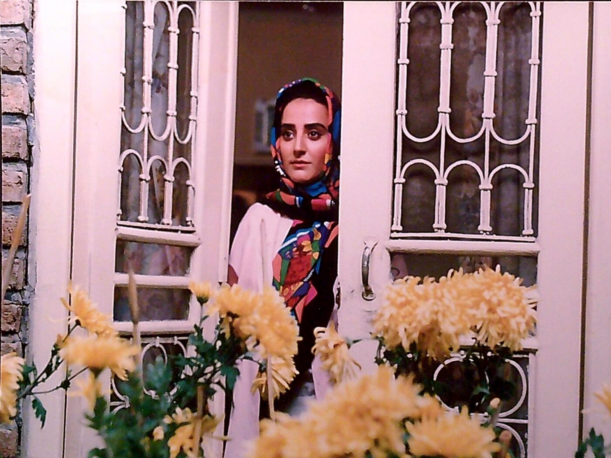
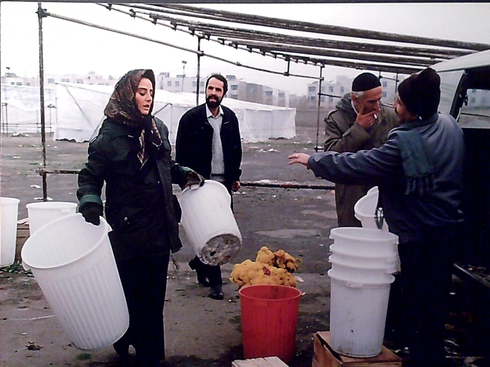

Film Archive · 1995
The Visit دیدار
A restrained archival presentation of surviving production photographs from Mina Lakani’s lead performance as Janet in The Visit, directed by Mohammad Reza Honarmand.
Award & Recognition

13th Fajr International Film Festival
Crystal Simorgh& Diploma of Honor
Best Actress in a Leading Role
The Visit (Didar)
Feb. 1–11, 1995 · Tehran
A recognition of a performance preserved not merely as an honor, but as part of the enduring record of the work itself: a moment in an artistic life carried forward through memory, image, and history.
Production Photography
Surviving Images
Four restored photographs survive as a compact visual record of the production and its working atmosphere.




Press & Archival Materials
Published & Production Record
Surviving printed materials connected directly to The Visit, preserved alongside the production photographs as part of the film’s archival record.
A Small Surviving Paper Archive
Programs, magazine covers, and period printed material preserve another side of The Visit beyond the production photographs. The surviving pieces are gathered together here as documents of the film’s public life.